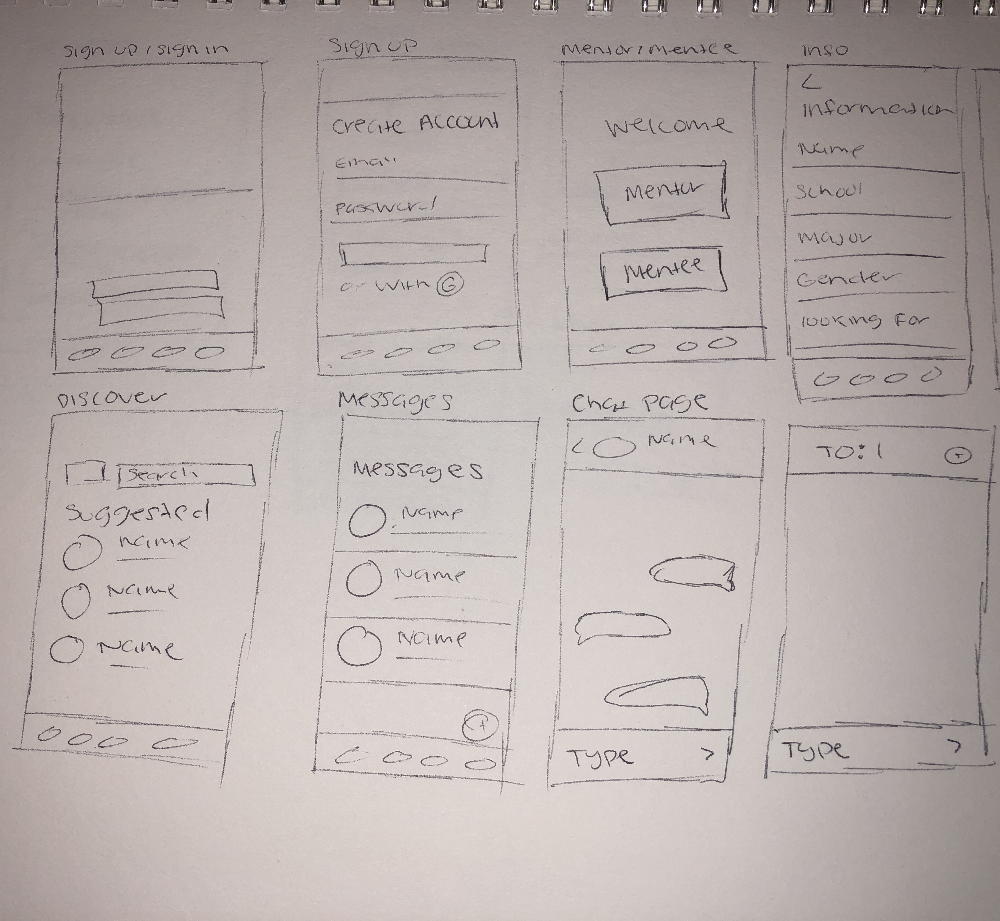
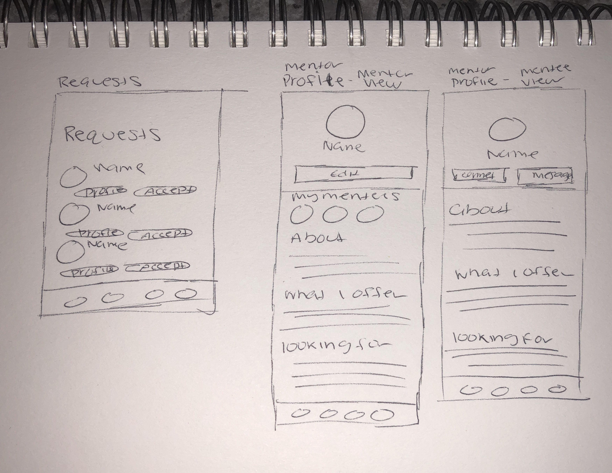
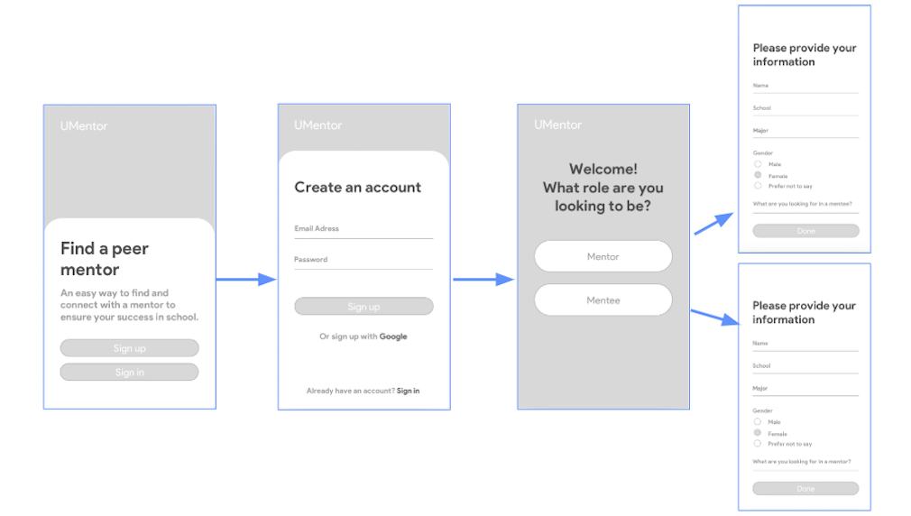
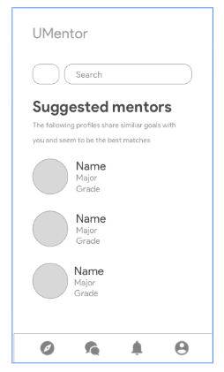
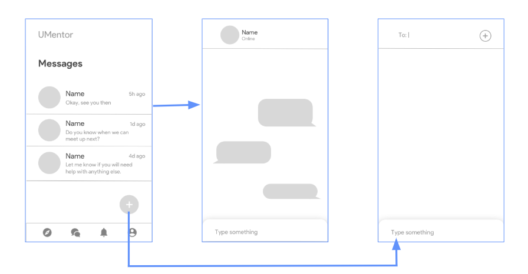
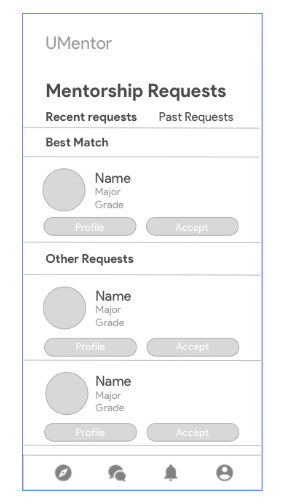
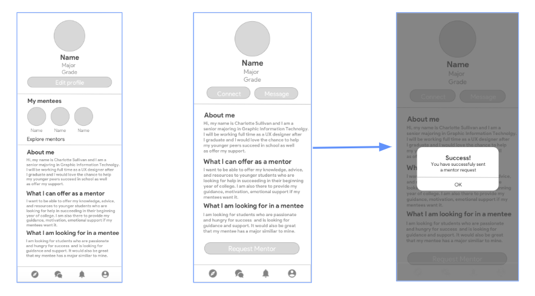

Sketches
After developing a clear understanding of the users’ preferences and the features required to address and alleviate the users’ paint points, I was finally able to start sketching the main user interfaces of the product.


Wireframes
After sketching and iterating the designs on paper, I started creating low-fidelity mockups of the product in Sketch app. The next couple slides will show the final results of the mockups.
User Sign Up Flow
The first step a new user has to undergo is signing up. Upon completion of signing up, the user will be redirected to a screen to designate themselves as a mentor or mentee. After the role has been chosen, they will be sent to a screen to enter background information about themselves and their objectives. The form includes their: name, college, major, gender and what they are looking for in a mentor or mentee. The information gathered will be used in the matching algorithm and displayed on the profile screen.
The app contains four main functions, each represented by a tab on the tab bar. The main components are: discover, messages, requests, and profile. The next couple of slides with go more into detail about these features.

Discover
UMentor’s purpose is to establish a strong and meaningful mentor/mentee connection. Offering a seamless process for students to discover other students with similar goals, passions, and background is critical to achieving the goal. On the discovery page, users see a list of suggested mentors or mentees. These mentors/mentees match the users’ preferences and share similar interests. A search and filter option was also implemented for the users to discover based on major, grade level, gender, etc.

Messages
Providing users with the ability to chat with their mentors or mentees before meeting is a crucial component to the product. This discovery was derived from the fact that the majority of the interviewees, from the user research, are skeptical with selecting a mentor/mentee before establishing a connection with them. The messaging component allow the users to chat with their mentors/mentees and develop a stronger relation before making a decision.

Requests
The requests feature provides mentees with the ability to connect with mentors, that were not previously recommended, after discovering them through the search feature. Students should have the option to reach out to mentors with a more distant background from their own, which provides mentees access to mentorship in a diverse set of fields that differ from their core studies. For example, a engineering student might be interested in reaching out to a mentor who specializes in business or design to increase their skill set and grow in that field.

Profile
The profile screen is another critical component of UMentor. According to most of the interviewed students, it is important for them to be able to find a mentor/mentee that align with their ambitions and interests. The profile screen allows them to learn more about potential mentors/mentees and provides the necessary information to make an informed decision on which mentors/mentees to request. Mentors will also be able to see the students that they are currently mentoring and mentees will be able to see their mentors.

Complete User Flow